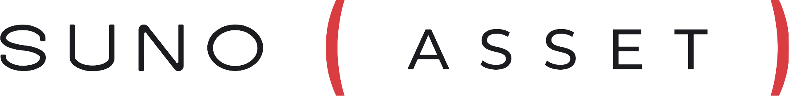

Roteiro da
apresentação.
Perspecta · apresentação técnica de 5 minutos. Fala sugerida para cada cena, com as ações no teclado e o tempo de cada parte.
Capa
10 sApresentar-se e dizer em uma frase o que o projeto faz.
Boa tarde. Eu sou a Julia Khristina, e este é o Perspecta: um pipeline de IA que transforma notícias do mercado financeiro em conteúdo para três níveis de entendimento — iniciante, intermediário e avançado.
Avançar →Problema · “É assim que ela chega”
20 sMostrar o problema com um exemplo real, antes de qualquer arquitetura.
Esta é uma notícia real que o sistema coletou na semana passada, sobre a Braskem.
Acender os termos →Em três parágrafos, dez termos técnicos: OPA, ações ordinárias, debêntures, capital votante… Quem já investe lê em segundos. Quem está começando trava na primeira linha. O desafio é fazer o mesmo fato chegar aos dois sem perder a precisão.
Avançar →Pipeline · oito etapas
2 min · ~15 s por etapaA parte técnica central: cada etapa com o número real da Braskem.
Vou seguir essa notícia por dentro do pipeline. São oito etapas, e cada uma é decidida de um jeito: por código, por um modelo de linguagem ou por uma pessoa.
Coletar código
A cada três horas o sistema lê sete feeds financeiros e junta a mesma notícia de fontes diferentes numa pauta. A Seu Dinheiro e a Money Times tiveram similaridade de 0,67, com três entidades em comum — acima do limiar de 0,40, então viraram uma pauta. As outras notícias ficaram em 0,11 ou menos e ficaram de fora. Tudo isso é código: nenhum token gasto.
Admitir código
Antes de gastar qualquer token, um portão: tamanho, idioma, texto completo e termos do glossário. A Braskem teve 615 palavras e 7 termos — admitida. Coleta e entrada manual passam pelo mesmo portão.
Extrair LLM
Antes de escrever, a IA monta um grafo dos fatos: três pontos centrais, seis afirmações, oito dados — cada um preso ao trecho exato da fonte. 81% das frases geradas ficaram ligadas a uma afirmação. E uma falha real: o alinhamento entre as duas fontes devolveu JSON inválido, e o sistema seguiu com fonte única, registrando o aviso.
Gerar LLM
Um grafo LangGraph gera três níveis vezes três formatos — texto, carrossel e roteiro —, cada um com suas regras. Essa notícia custou 88 mil tokens em 27 tentativas, com 1,6 segundo por chamada.
Medir código
Cada tentativa é medida sem IA: legibilidade, densidade de termos técnicos, números fora da fonte, linguagem de recomendação. O gráfico mostra o essencial: as saídas do modelo — os círculos vazios — caíram fora das faixas de nível. O sistema só confirma um nível quando os dois eixos concordam.
Reescrever LLM
Cada falha volta para a IA como número: métrica, valor e faixa. Três tentativas por material, e as 27 continuaram reprovadas. O sistema parou e mandou para revisão com o motivo — nunca marcou como aprovado.
Julgar LLM
Se passasse nas métricas, um segundo modelo, maior e diferente do gerador, daria notas por critério — mas quem aprova é o código: média mínima de 7 e nenhum critério abaixo de 5. Como nada passou, o juiz não foi chamado: 27 chamadas do modelo mais caro economizadas.
Revisar humano
E nada sai sem uma pessoa aprovar. O material pode ser aprovado, editado — e aí é reavaliado — ou rejeitado com motivo. Tudo fica gravado: versões dos prompts e limiares, cada tentativa e cada decisão.
Se o tempo apertar: reduza Admitir e Julgar a uma frase. As etapas que mais mostram o diferencial técnico são Extrair, Medir e Reescrever.
Aplicação · vídeo
45 sO vídeo começa sozinho. Fale por cima, sem esperar cada capítulo terminar.
Isso é o que a pessoa que revisa vê. A pauta da Braskem com as duas fontes… Em Materiais, escolho notícia, nível e formato. Este é o texto Iniciante, já com a minha edição registrada no histórico. Logo abaixo, as três tentativas da IA com as métricas de cada uma, e o painel de revisão.
O carrossel é renderizado em imagens prontas para o Instagram.
E por fim, Configurações: o glossário. Ele não é só uma tela de consulta — alimenta a admissão, a densidade de termos técnicos e a regra que obriga o Iniciante a explicar cada termo. Hoje são 204 termos do Banco Central, nenhum aprovado ainda: só termo aprovado entra nas explicações.
Atalho: se a fala adiantar, clique em “Configurações” na lista à direita do vídeo para pular direto.
Avançar →Output · “A mesma notícia, no seu nível”
45 sO momento-chave para o RH. Arraste o controle devagar enquanto fala.
E este é o resultado. A mesma notícia no nível Iniciante: frases curtas, cada termo explicado em linguagem simples.
Arrastar até Avançado · ou 3No Avançado, jargão pleno — estrutura acionária, risco de crédito do emissor. Os medidores acompanham: a legibilidade cai, a densidade de termos sobe, e o avaliador confirma o nível.
Mostrar a saída do modelo VE para ser transparente: esta é a saída original do modelo. Ele não diferenciou os níveis, e o avaliador barrou. A versão final passou por revisão humana — que é exatamente o papel previsto para a pessoa no processo.
Voltar à revisão V · avançar →Formatos
15 sPassagem rápida — o carrossel já apareceu no vídeo.
Os três formatos saem da mesma base: carrossel, roteiro de vídeo e texto. Carrossel e roteiro ainda aguardam revisão.
Avançar →Próximos passos
25 sMostrar maturidade: cada próximo passo nasce de algo que a execução real revelou.
Para levar do protótipo à produção, são quatro passos. Primeiro, calibrar os níveis com mais notícias reais — hoje são duas medidas. Segundo, aprovar e ampliar o glossário: nenhum dos 204 termos foi aprovado ainda, e faltam termos de mercado de capitais. Terceiro, medir o juiz com notas reais e comparar com a revisão humana. E quarto, deixar a comparação de fontes mais robusta, a partir das falhas que esta própria execução mostrou.
Avançar →Encerramento
5 sAgradeço a atenção. Os QR codes levam ao meu LinkedIn e ao repositório do projeto. Fico à disposição para perguntas.
Perguntas prováveis
Custo e viés: o juiz é o modelo mais caro e, se fosse o mesmo do gerador, avaliaria o próprio texto. As métricas determinísticas filtram antes, e a aprovação é calculada por código — é auditável.
O gerador é um modelo pequeno (gpt-oss-20b), as faixas de Flesch e densidade ainda são provisórias e o glossário é quase todo de macroeconomia — em notícia de empresa, quase nenhum termo conta como técnico.
Na Braskem, 88.481 tokens em 27 tentativas de geração, ~1,6 s por chamada. Coleta, admissão, métricas e gráficos são código e não gastam tokens.
Cada frase gerada é ligada a uma afirmação extraída, e todo número ou data do texto é conferido contra o texto da fonte — não contra a extração, que também pode errar.
Falha com segurança: se o alinhamento entre fontes falha, segue com fonte única e registra o aviso; se esgotam as reescritas, vai para revisão com o motivo — nunca como aprovado.